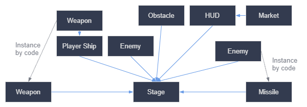

Introductionhttps://quinndonnelly22.itch.io/dodge-the-creeps
- Programming Languages
- GDscript adiction - They have an in browser learning tool for it similar to golang - link to browser learning tool
- C#
- You can use GDExtension tech to write in C or C++ to integrate other tech
- Mental Model of GoDot
- A tree of nodes that you build into a scene
- You can have nodes communicate through signalsadiction
- A scene in GoDot serves the purpose of being a scene and prefab from unity - so scenes in GoDot are my prefab
- Games are a Scene tree, this seems to be the same thing as what I’ve been calling node tree as scenes are nodes themselves.
- Signals follow the Observer Pattern Messaging based connections
- Nodes, scenes, the scene tree, and signals are four core concepts in Godot that you will manipulate all the time.
- Tooling
- The GoDot code editor is a GoDot game itself
- You can run code in the editior with the
@toolannotation
Background GDot Information
- scenes are acting like nodes so it would seem me saying a scene is a node could be hit with an “umm actually” however for mental model purposes scene is a node that hides it’s contents. When you make a new scene you basically have created a new node type.
- Labels are used to create text
- you set the “main scene” in a project → happens when you first click play
- Each project has 1 main scene, you can also use the movie looking button to play currently selected scene
- Seems like docs indicate common issue with running the wrong scene
- The file
project.godotcontains the main scene configuration
- Each project has 1 main scene, you can also use the movie looking button to play currently selected scene
tscnextension is a scene’s extension - called “packed scenes”
Instancing
- All instances can have their properties changed independently in the inspector when in the editor or you can edit all instances by making the update in it’s scene
- The little undo circle in the inspector means you’ve changed a value on that instance from it’s original (scene) value
- There is a mention here about resources which are another essentail building block of GoDot but one they will cover later
- Due to instancing the team recommends building the following for your game

Scripting
- scripts inherit all properties and functions of their parent
- Every script is implicitly a class. Using the
extendskeyword at the top is how you set your parentRefCountedis the default base class which seems to be the base class handling memory management in the engine
- Naming convention is snake case in the scripts and Title case in the inspector - they transform the names there
- The docs claim that member variables sit after extends and before the functions but in testing I was able to get vars to “hoist” so I think they have hoisting in the scripting language
_process()is a virtual function in theNodeclass which is called every framedeltawill be passed to_processto give you the time that has past between cycles
- In built functions that communicate with the engine start with an
_ - There isn’t a
thiskeyword to get to properties you inherit so var names just exist that you need to know are properties of your parents exrotationin this case #is the comment character in the scripting lang
Listening for Input
Inputis a singleton managed by GoDot to respond / gain access to key presses and other input from the user- Project → Project Settings → Input map is the place with the strings mapped to inputs for various controller input types
ui_leftandui_rightare always predefined and map to d pad on controllers and arrow keys on keyboard
- There is an
_unhandled_inputwhich can be used to make callbacks for key pressing which won’t be pressed every frame - they gave the example of space to jump
Signals
- They are first class having the type
Signal _on_node_name_signal_nameis the convention for signal handler functions- You can wire them in the node panel (over on the right window it’s a tab next to inspector)
- This is only possible for nodes that you make through the editor and won’t work for nodes you instantiate through code, for that you need code wiring of the signals
- the
Nodeclass has a functionset_processwhich will control whether or not the_processfunction will be getting called in the game loop _readyis the internal function that is called once the node is fully instantiated- the
Nodeclassget_nodefunction does a lookup of children by name - the
visibleproperty will control if the node is visible on screen - if you want a timer to start automatically you need to set
Autostarton the timer - You can connect to signals with the
connectfunction on theSignal - Emit a signal by calling
emit()on that signal- You can make your own
Signalto emit a custom signal signal health_changed(old_value, new_value)- this is an example definition of a signal on a node
- From the docs looks like signal params are the wild west, they don’t’ enforce you can only have matching number of params when you emit
- You can make your own
My first 2D Game
- You set your project’s veiwport setting in
Project Settings→Window→Size- For this game it’s 480 x 720 so a portrait game
- Under scale you control the way the game scales to different size screens. We’ve set to preserve aspect ration with the
Keepsetting. Andcanvas_itemswhich I need to read what that does.- Canvas items mode will scale the Images then render, veiwport renders then scales
Player Scene
- Important note when making a scene, you make your root the type of node that you want your scene to be used as.
- In this example a player is a
2DAreasince we primarily are using it to detect when something comes into it’s area, along with this we attach animated sprite and a collider to facilitate the above.
- In this example a player is a
- That common error I was seeing when making a
2DAreathe root node was due to 2 parts. One it needs a collider on it - under shape. but usually you want to hook up your visual prior to collider so that you can make the hitbox match the visual. In this they use anAnimatedSprite2D
Scripting player movement
- The
$NodeNameis the equivalent of making theget_node(NodeName)call - it’s important to remember the viewport is actually in the 4th quadrant of a Cartesian coordinate plane but the Y axis is flipped. so that means that going “down” is actually adding to the y access
- Why, why they do this must be a reason to basically mirror the graph upside down up and right is (+,-) and down and left is (-,+) that is going to shake my brain for a bit
- you can grab the screen size vector2 by making a call to
get_viewport_rectwhich gives you aVector2of the screen - Mapping input as we’ve seen before in in the second tab of project settings, give it a name and map inputs to that you call in code using
Inputand can just if action is pressed or just pressed etc.
Animating Player
- set the current animation by grabbing the
AnimationPlayerand setting theanimationproperty on it - You can have movement shown by controlling the
flip_handflip_vproperties to show velocity of movement. - when not moving be sure to call
stop()on the animation player. (or setting to an idle animation)
Player Collisions
- a custom signal can be created using
signalkeyword, usually defined with properties at top of file- calling
emit()on that signal will have the signal emitted to listeners
- calling
- You can use Node panel on inspector to wire the
_on_body_enteredcallback and provide logic for handling the player collision with another object- Note that when setting physics properties in
_processyou should useset_defferedotherwise there are race conditions with the physics loop.
- Note that when setting physics properties in
Mob Scene
Scene Setup
- make the same setup as player but including a notifier that I haven’t used yet - will see later what that is
- Looks like scale should be set on the lowest level item that needs to scale ie. the sprites are big so scale the
AnimatedSprite2Dnot the root node. - Animation speed can be changed by adjusting the FPS on the animation player on a per animation basis
Mob Script
- Would seem the LSP is still in the needs some work phase
var animations = Array($AnimatedSprite2D.sprite_frames.get_animation_names())- This line was basically accepting anything after
sprite_frames
- This line was basically accepting anything after
- Array has a useful rand function on it called
pick_randomwhich is being used to pick a random animation. - I currently call play in the
_readyfunction because I assume I want this thing animating once it comes in but maybe I’ll handle that elsewhere when we get to spawning them
Main Scene
Scene Setup
- Use the node type since we don’t need location data for the main scene
- Using the
Path2Dwe can make a path around the scene which in combination with thePathFollow2Dwill act as our spawn location - Timers can be set to one shot which means they will just run once. Useful for the start of game delay
Main Script
- I need to refresh my radian math
- Auto completely being mad bugged up is going to bause a many bugs I see it already, the thing doesn’t even know what
linear_velocityis. I think there must be a typing systems here that I could then use to make that better since this lang isn’t actually statically styped - doing signal emiting and tying into timers timeouts is easy I’m quite comfortable with it.
- Directional math needed to spawn the mobs I understand what we are doing but I am not comfortable enough in radian based math to see the angles in my head, need to refresh there.
HUD
CanvasLayeris the root node for the UIControlis the base class for UI elements- Buttons and things work exactly how I would expect from working on other UI frameworks
- you can await a timer using
awaitsyntax like promisesawait $MessageTimer.timeoutwill have you suspend till that timeout occurs- You can pragmatically create timers with
get_tree().create_timer(duration)
- You can create groups which allow you to signal to a group of instances, in the mob case we add mob scene to the mob group and that allows the following
get_tree().call_group("group_name","function_name")which allows for group signaling
AudioStreamPlayercan be used to add music to the game- Using
ColorRecorTextureRecyou can add background to the game
Conclusion
I think I’ve got enough of an understanding of the fundamentals that I could get an asset pack / make one for myself and create a similar level difficulty game myself without a guide. I think I’ll hold off on the next section of learning - “First 3D Game”. Since I don’t have plans to use the 3D engine yet. I’d like to make make sure I can make 2D games as simple as this but with my own ideas.
Publishing
I’ve published the game to run - on itch.io added controler support as well as with the InputMap in GoDot that was trivial.
Anki creation
- How to spawn instances
- How to determine if a button is being pressed
- What should be the root node for a HUD scene in 2D GoDot
- Programming prompts for GoDot
- physics based properties should be set deffered
- Normalizing vectors and the implications of movement
- y axis is inverted